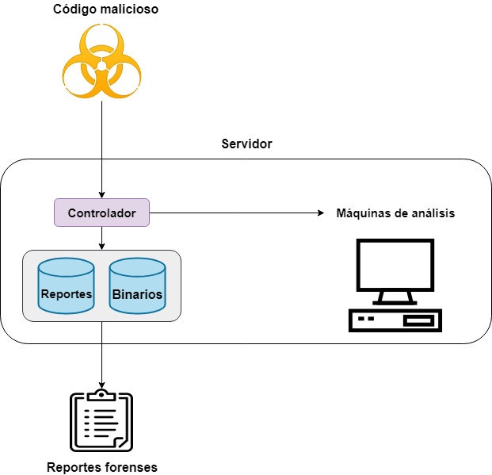

Agenda
Cyber Threat Intelligence
Recoleccion
Analisis
Atribucion
Cyber Whaaaaaaaaaaaaaat?
• Intelligence
"Capacidad para pronosticar cambios, positivos o negativos, con el tiempo suficiente como para hacer algo al respecto". --Breakspear
• Cyber Threat Ingelligence
La Inteligencia de Amenazas (CTI) es una disciplina que intenta ser una medida proactiva de seguridad informática y de redes. Se centra en la recopilación de datos y el análisis de información para obtener una mayor comprensión de las amenazas a las que enfrenta una organización. El objetivo de un analista de CTI es producir y entregar información inteligente relevante, precisa y de manera oportuna para que las organizaciones sepan cómo protegerese de un potencial ataque.
Las principales áreas de interés de la Inteligencia de Amenazas son el ciberdelito, el hacktivismo y el ciberespionaje.
Amenazas Persistentes Avanzadas (APTs)

Cyber Kill Chain

Recolección
Malware
Malicious Software: software destinado a dañar o realizar acciones indeseadas en un sistema informático.

Clasificación y Tipos de Malware
Por método de propagación
- A través de Descargas
- A través de Redes interconectadas
- A través de Vulnerabilidades
- A través de Backdoor preinstaladas

Por tipo
- Virus
- Worm
- Trojan
- Rootkit
- Ransomware
- Keylogger
- Adware
- Spyware
- Scareware
- Backdoor
- Wiper

IOCs
Se denomina Indicador de Compromiso (IOCs) a todo artefacto observado en una red o en un sistema operativo que, con alta confianza, indica una intrusión en la computadora
- Firmas de antivirus
- Hashes de archivos maliciosos
- URLs, dominios o IPs
Sandbox y Análisis de Malware
Análisis
Hipótesis y prejuicios
MITRE ATT&CK Framework
MITRE ATT&CK ™ es una base de conocimiento accesible a nivel mundial sobre las tácticas y técnicas empleadas por los adversarios de acuerdo con lo observado en el mundo real. ATT&CK se utiliza como base para el desarrollo de modelos y metodologías de amenazas específicas en el sector privado, en el gobierno y en la comunidad de productos y servicios de ciberseguridad.
Matrices ATT&CK
En la actualidad ATT&CK cuenta con tres matrices: Enterprise, Mobile y PRE-ATT&CK
Cada matriz esta compuesta por las tacticas y las tecnicas que describen el comportamiento de Amenazas Persistentes Avanzadas
Reglas de YARA
Yet Another Recursive Acronym
rule APT28_CHOPSTICK {
meta:
description = "Detects a malware that behaves like CHOPSTICK mentioned in APT28 report"
license = "https://creativecommons.org/licenses/by-nc/4.0/"
author = "Florian Roth"
reference = "https://goo.gl/v3ebal"
date = "2015-06-02"
hash = "f4db2e0881f83f6a2387ecf446fcb4a4c9f99808"
score = 60
strings:
$s0 = "jhuhugit.tmp" fullword ascii /* score: '14.005' */
$s8 = "KERNEL32.dll" fullword ascii /* PEStudio Blacklist: strings */ /* score: '5' */ /* Goodware String - occured 14405 times */
$s9 = "IsDebuggerPresent" fullword ascii /* PEStudio Blacklist: strings */ /* score: '5' */ /* Goodware String - occured 3518 times */
$s10 = "IsProcessorFeaturePresent" fullword ascii /* PEStudio Blacklist: strings */ /* score: '5' */ /* Goodware String - occured 1383 times */
$s11 = "TerminateProcess" fullword ascii /* PEStudio Blacklist: strings */ /* score: '5' */ /* Goodware String - occured 13081 times */
$s13 = "DeleteFileA" fullword ascii /* PEStudio Blacklist: strings */ /* score: '5' */ /* Goodware String - occured 1384 times */
$s15 = "GetProcessHeap" fullword ascii /* PEStudio Blacklist: strings */ /* score: '5' */ /* Goodware String - occured 5875 times */
$s16 = "!This program cannot be run in DOS mode." fullword ascii /* PEStudio Blacklist: strings */ /* score: '5' */ /* Goodware String - occured 20908 times */
$s17 = "LoadLibraryA" fullword ascii /* PEStudio Blacklist: strings */ /* score: '5' */ /* Goodware String - occured 5461 times */
condition:
uint16(0) == 0x5a4d and filesize < 722KB and all of them
}
Atribución
¿Qué es la atribución?
Problemas de la atribución
CLEARED FOR RELEASE: We thwarted an attempted Hamas cyber offensive against Israeli targets. Following our successful cyber defensive operation, we targeted a building where the Hamas cyber operatives work.
— Israel Defense Forces (@IDF) May 5, 2019
HamasCyberHQ.exe has been removed. pic.twitter.com/AhgKjiOqS7